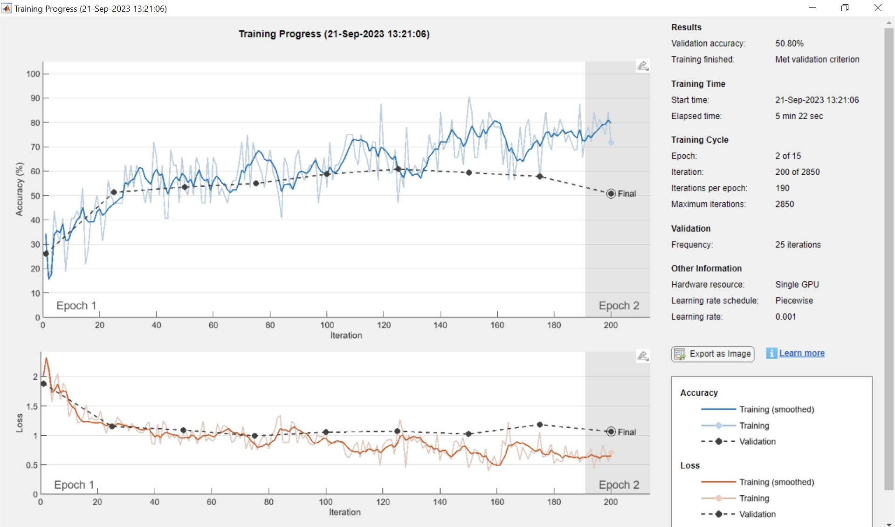
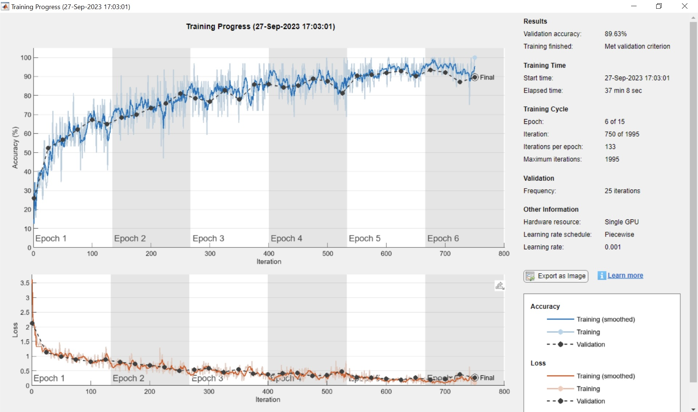

Neurological Image Classification Using Deep Neural Network
Overview
This project aims to create a deep neural network that would classify axon images from patients with Autism Spectrum Disorder. Through results analysis and visualization, we can create an automatic medicinal classification system, as well as identifying key markers representing axon patterns in ASD. .
Knowledge Gap
Neuroanatomists are able to identify axon pattern markers in brains from a healthy control population (CTR) versus patients with Autism Spectrum Disorder (ASD), yet, this process demands labor intensive surveys of microscopic sections. We propose a machine learning method to automatically classify microscopic sections from ASD and CTR brains, while also taking into account the different white matter regions: superficial white matter (SWM) and deep white matter (DWM). With more training, this method could make this labor-consuming process more automated and labor-free. In addition, comparing the network’s ASD-identifying regions with neuroanatomists could point to discovery of other distinguishing anatomical markers among ASD patients that could have been overlooked by the human eyes.
Transfer Learning with GoogleNet

Dataset Selection

Two datasets consisting of post-mortem human brain microscopic sections were acquired from the Human Systems Neuroscience Laboratory, directed by PI Basilis Zikopoulos. One dataset consisted of electron microscopy images, and the other dataset consisted of toluidine blue-stained optical microscopy images. These images were labeled based on the population type of where the sections were obtained from: healthy control group versus patients with ASD, and further divided according to the location of origin of the white matter: superficial white matter versus deep white matter. The resulting four classes were labeled as "Control Deep White Matter" (CTR DWM), "Control Superficial White Matter" (CTR SWM), "Autism Spectrum Disorder Deep White Matter" (ASD DWM), and "Autism Spectrum Disorder Superficial White Matter" (ASD SWM).
In order to avoid overfitting in the trained network, we employed a data splitting method that would ensure a complete separation across cases between the training and testing dataset. The EM images and the optical microscopy images are separated differently due to their variances in case and image availability.
Image Preprocessing
- Sliding Window
-
The sliding window technique (as illustrated in the figure below) solves two problems:
- Fit the image into the right input size required by the network.
- Increase the number of training images due to limited dataset.
- Data Augmentation
- There are a few challenges with the images before we feed them to the network for training:
- Each image has parameters for sizing: numrows, numcols.
- Grayscale images are only 1-D (n-by-m-by 1) while most deep learning networks take input images as 3D array (n-by-m-by-3).
- Objects may appear in different locations of the images, upside down etc. which may decrease generalization. Therefore, images need to be preprocessed beforehand.
Training the Network
The network is trained with a set of pre-determined hyperparameters as showned below. The hyperparameters are adjusted according to the training and validation accuracy, as well the loss performance.
options = trainingOptions('sgdm', 'InitialLearnRate', 0.001,'Momentum', 0.9, 'MaxEpochs', 10, 'MiniBatchSize', 16, ... 'LearnRateSchedule','piecewise','LearnRateDropFactor', 0.1,'LearnRateDropPeriod', 10, 'L2Regularization', 0.0001, ... 'ValidationData', augimdsValidation, 'ValidationFrequency', 25, 'ValidationPatience', 5, 'Shuffle', 'every-epoch','ExecutionEnvironment','gpu','Plots','training-progress'); netTransfer = trainNetwork(augimdsTrain,lgraph,options);The training progress graph shows the accuracy of the training and validation set for each iteration to examine for overfitting.


Results Analysis & Visualization
This shows the result of one of trained networks. The confusion chart shows the acccuracy of classification for each class, as well as which class the network misclassifies the most.
The accuracy for the 4 classes is then combined to show the overall pathology which is the main focus in this classification.The PCA chart visualizes the 4 classes according to the network's best classification attempt; showing which class is most distinct from each other, and which classes are most confused.
Each class is represented by a different color: ASD_DWM - red, ASD_SWM - orange, CTR_DWM: dark blue, CTR_SWM: light blue. There are also other versions that focus on the pathology of the axons (ASD vs CTR) or the white matter region (DWM vs SWM).
Heat Map Analysis
The heat map highlights the areas in an image where the network is looking at the most when classifying an image. The hotter an area is, the more important it is in the final decision. By studying the area where the network most bases its classification, we can identify the common axon patterns that are the most "representative" in ASD.
- © Untitled
- Design: HTML5 UP